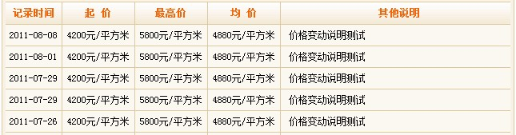
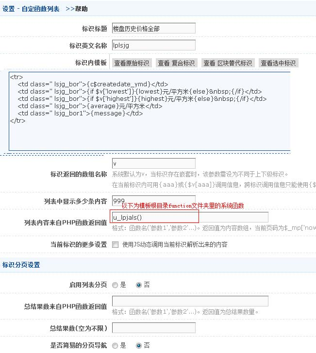

效果:

标识模板(template)代码:
<tr>
<td class=" lsjg_bor">{c$createdate_ymd}</td>
<td class=" lsjg_bor">{if $v['lowest']}{lowest}元/平方米{else}&nbsp;{/if}</td>
<td class=" lsjg_bor">{if $v['highest']}{highest}元/平方米{else}&nbsp;{/if}</td>
<td class=" lsjg_bor">{average}元/平方米</td>
<td class=" lsjg_bor1">{message}</td>
</tr>
说明
整体截图如下
